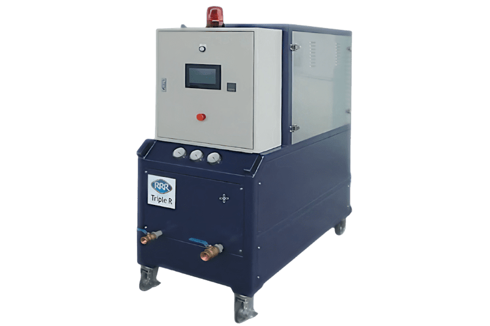
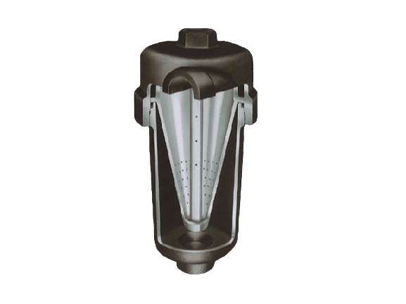
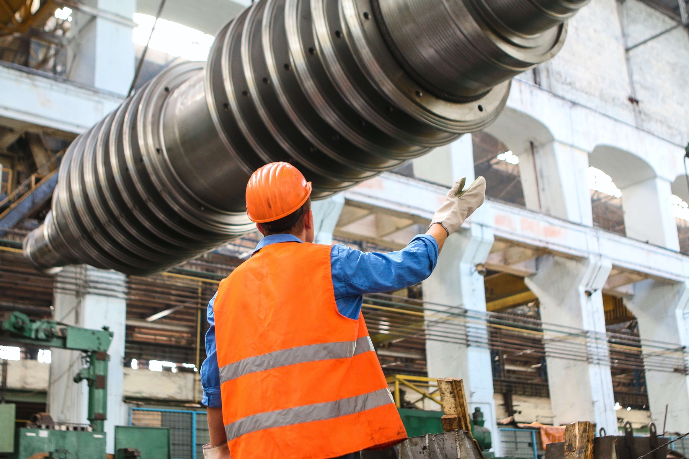
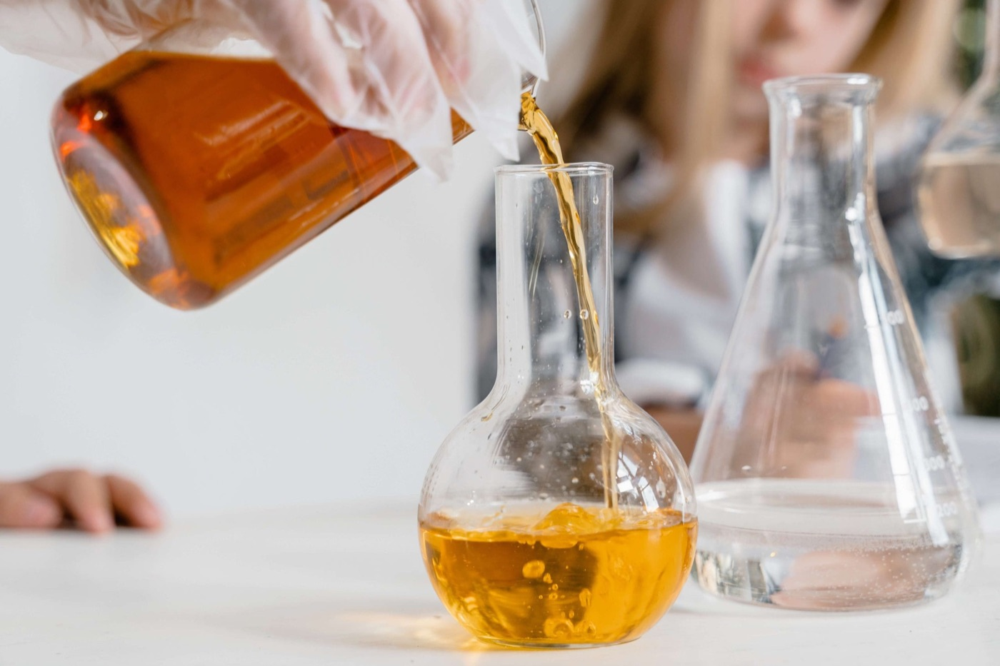
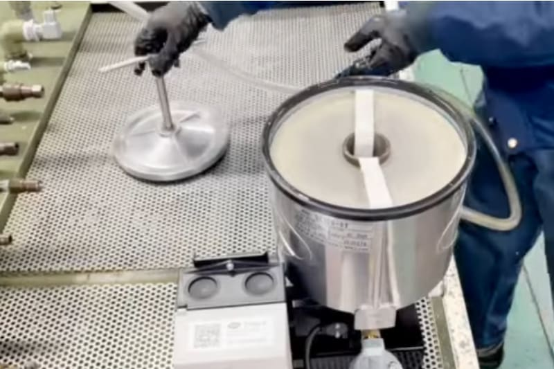

Bypass-oliefiltratie sinds 1992
Stop met olie verversen.Begin met olie reinigen.
Triple R-bypassfilters verwijderen vaste deeltjes, varnish, water en lucht uit hydraulische olie en smeerolie — met één filterconcept. Minder stilstand, langere olielevensduur, lagere kosten.
- Gratis labo-analyse met persoonlijk advies
- Standaard gemonteerd door toonaangevende machinebouwers

Vertrouwd door machinebouwers en rederijen
- KOMATSU
- Yokohama
- ENGEL
- Stena Line
- SKF
- Rolls-Royce
- Castrol
Waarom olie reinigen
80% van de machinestoringen begint in de olie.
De meeste schadelijke deeltjes zijn kleiner dan 5 µm: onzichtbaar, en kleiner dan de spleten in pompen en servokleppen.
- > 70%van de hydraulische machines draait op sterk vervuilde olie
- > 50%kortere levensduur door water in de olie
- 5–6×hogere klepwrijving door varnish
Vuil dat één pomp per jaar rondpompt
Pomp van 200 l/min, één jaar in bedrijf
Oplossingen
Eén filterelement tegen vier soorten vervuiling
De meeste filters stoppen enkel deeltjes. Een Triple R-element werkt in de diepte en houdt ook varnish en water vast.
Vaste deeltjes
Slijtagemetaal, stof en silica slijpen pompen, kleppen en cilinders.
Tot 99% verwijderdVarnish & sludge
Oxidatieresten zetten zich af op kleppen; servo- en proportionele kleppen gaan haperen.
V-element: 1 µm absoluutWater
Water versnelt oxidatie en corrosie. De cellulose in het element absorbeert het.
Tot < 100 ppmLucht & schuim
Luchtbellen veroorzaken cavitatie en lawaai. De Quicktoron ontlucht de olie.
Tot 95% verwijderdZo werkt het
114 mm dieptefiltratie in drie stappen
Een Triple R-filterelement is een dieptefilter op basis van cellulose. De olie stroomt langzaam door 114 mm media en wordt per laag fijner gereinigd.
Grove laag
Grote deeltjes blijven bovenaan, zodat de diepere lagen hun capaciteit bewaren voor fijner vuil.
Niet-samengeperste laag
Kleinere deeltjes blijven steken; de cellulosevezels absorberen vrij en geëmulgeerd water.
Samengeperste laag
De fijnste deeltjes en oxidatieresten (varnish, sludge) worden vastgehouden.
Het element vervangt u zonder morsen: de afvalzak zit in de middenbuis. Hoe werkt bypassfiltratie?
Producten
Van filterelement tot mobiele oliereiniger

Filterelementen
3-in-1 dieptefilter voor deeltjes, varnish en water.
- Filterfijnheid
- 1–10 µm abs.
- Viscositeit
- 3–320 cSt
BU-serie
Bypassfilter direct op de hogedrukleiding, zonder pomp of motor.
- Druk
- tot 450 bar
- M-element
- 2 µm abs.

SE-serie
Offline oliereiniger met eigen motor-pompgroep, stationair of mobiel.
- Uitvoering
- vast of mobiel
- Optie
- deeltjesteller

OSCA-serie
Hoog debiet voor grote tanks, smeerolie en hoge viscositeit.
- Debiet
- 6 – > 60 l/min
- Volume
- > 50.000 l

Vacuümontwateraar
Verwijdert automatisch vrij en opgelost water en lucht.
- Viscositeit
- 10–600 cSt
- Optie
- ATEX

Quicktoron
Cycloon-ontluchter tegen schuim, cavitatie en lawaai.
- Luchtbellen
- tot 95% eruit
- Vaak met
- OSCA-serie
Resultaten
Wat schone olie oplevert
Productkeuze
Welke Triple R past bij uw installatie?
Drie vragen, één indicatief advies. Een specialist bevestigt de keuze.
Aanbevolen
BU-serie
Bypassfilter direct op de hogedrukleiding, zonder eigen pomp of motor. Geschikt voor servo- en proportionele hydrauliek.

Sectoren
Toepassingen per sector
Cases
Gemeten vóór en na
ISO 4406vóór → na
21/19/1616/14/11
Yokohama Rubber
Hydraulische persen met varnishproblemen.
Lees de caseISO 4406vóór → na
20/18/1515/13/10
Komatsu
Mobiele hydrauliek en motorolie.
Lees de caseISO 4406vóór → na
19/17/1415/12/9
Castrol
Tandwielolie langdurig schoon gehouden.
Lees de caseISO-waarden, sectoren en producten op deze kaarten zijn layoutvoorbeelden en worden vervangen door de gegevens uit de case-PDF’s.

ISO 4406 · NAS 1638 · water · TAN · MPC
Gratis olieanalyse
Weet hoe proper uw olie écht is
Een labo-analyse van uw olie met persoonlijk advies van een Triple R-specialist. Resultaat binnen [X] werkdagen.
Aanvraag online
Beschrijf uw installatie in 2 minuten.
Staalname
Wij sturen een staalnamekit of komen langs.
Labo-analyse
Deeltjes, water, viscositeit, TAN en varnish.
Rapport en advies
U ontvangt het rapport met concreet advies.
Voor bedrijven · 1 staal per installatie · Benelux en Frankrijk
Duurzaamheid
De schoonste olie is de olie die u niet vervangt
- Reduce
Olieverbruik tot 90% lager, minder afgewerkte olie.
- Reuse
Dezelfde olie jarenlang in gebruik; sommige klanten al meer dan 20 jaar.
- Recycle
Vacuüm verpakte elementen, vervangen zonder morsen met de afvalzak in de middenbuis.
vermeden per 1.000 l olie die niet ververst wordt (aanname: 1 l olie ≈ 3,0 kg CO₂).
Bereken uw besparing
Kennisbank
Uitgelegd door specialisten
Veelgestelde vragen
Wat is een bypassfilter (nevenstroomfilter)?
Een bypassfilter reinigt continu een kleine deelstroom van de olie, naast het hoofdcircuit. Omdat de olie traag door 114 mm filtermedia stroomt, filtert het veel fijner dan een full-flowfilter en houdt het ook varnish en water vast.
Is olie reinigen goedkoper dan olie verversen?
Vaak wel: u betaalt filterelementen in plaats van nieuwe olie, afvoer en stilstand. Met de besparingscalculator rekent u het na voor uw installatie.
Welke vervuiling haalt een Triple R-filter uit de olie?
Vaste deeltjes, varnish en sludge, en water — in één element. Lucht en schuim verwijdert u met de Quicktoron.
Wat kost een filterelement?
Tussen € 25 en € 90, afhankelijk van type en maat; één element volstaat voor tanks tot 1.000 l.
Hoe werkt de gratis olieanalyse?
U vraagt de analyse online aan, wij sturen een staalnamekit of komen langs, het labo meet uw olie en u ontvangt een rapport met advies.
Advies op maat
Bespreek uw installatie met een specialist
Beschrijf uw machines in 2 minuten en ontvang vrijblijvend advies over de juiste filteroplossing.

Maxim Van Uytven
Sales Manager
Team Triple R Europe, Aartselaar. Portret volgt na de fotoshoot.